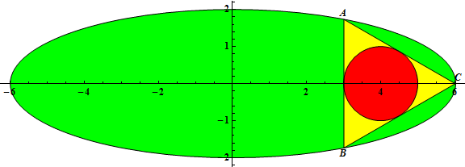
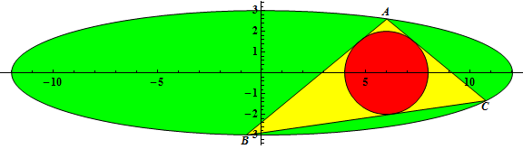

Project Euler 471
Project Euler 471
题目
Triangle inscribed in ellipse
The triangle \(\triangle ABC\) is inscribed in an ellipse with equation \(\dfrac {x^2} {a^2} + \dfrac {y^2} {b^2} = 1, 0<2b<a, a\) and \(b\) integers.
Let \(r(a,b)\) be the radius of the incircle of \(\triangle ABC\) when the incircle has center \((2b, 0)\) and \(A\) has coordinates \(\left( \dfrac a 2, \dfrac {\sqrt 3} 2 b\right)\).
For example, \(r(3,1)=\dfrac{1}{2}, r(6,2)=1, r(12,3)=2\).


Let \(G(n) = \sum_{a=3}^n \sum_{b=1}^{\lfloor \frac {a - 1} 2 \rfloor} r(a, b)\)
You are given \(G(10) = 20.59722222, G(100) = 19223.60980\) (rounded to \(10\) significant digits).
Find \(G(10^{11})\).
Give your answer in scientific notation rounded to \(10\) significant digits. Use a lowercase e to separate mantissa and exponent. For \(G(10)\) the answer would have been \(2.059722222e1\).
解决方案
固定外椭圆\(E:\dfrac{x^2}{a^2}+\dfrac{y^2}{b^2}=1,\)以及以\(O=(2b,0)\)为圆心、半径为 \(r\) 的内圆\(K_r:(x-2b)^2+y^2=r^2.\)
考虑如下过程迭代：从外椭圆 \(E\) 上任一点 \(P_0\) 出发，作一条与内圆 \(K_r\) 相切的直线，它与 \(E\) 的另一交点记为 \(P_1\)；再从 \(P_1\) 作与 \(K_r\) 相切的直线得到 \(P_2\)；如此继续。若存在某个起点 \(P_0\) 使得三步后回到起点（即 \(P_3=P_0\)），那么就得到一个三角形 \(P_0P_1P_2\) 既内接于 \(E\) 又外切于 \(K_r\)。
Poncelet 闭合定理断言：对于两条圆锥曲线 \(C,D\)，如果存在一个 \(n>2\) 边形同时内接于 \(C\) 且外切于 \(D\)，那么这样的 \(n\) 边形会构成一个无穷族；并且 \(C\) 上的每一点都能作为某个这样的 \(n\) 边形的顶点。取 \(n=3\) 即三角形情形。
在本题中，一旦某个半径 \(r\) 使得 \((E,K_r)\) 存在一个满足条件的三角形（题目保证存在），则由上述定理可知：外椭圆上的任一点都可以作为某个同半径 \(r\) 的可行三角形的顶点。因此为了计算 \(r(a,b)\)，可以不失一般性地把顶点选到更方便的点，例如\(A'=(a,0),\)并在该构型下求出同一个 \(r(a,b)\)。
由于外曲线与圆心均关于\(x\)轴对称，可取另外两点为\(B=(x,y), C=(x,-y), y>0,\)并且 \(B,C\) 在椭圆\(E\)上。
直线 \(BC\) 是竖直线 \(X=x\)。圆心到该直线的距离为 \(|2b-x|\)，而内切圆与 \(BC\) 相切，所以\(r=2b-x\)（内切圆在三角形内部，故 \(x<2b\)），即\(x=2b-r.\)
直线 \(AB\) 过 \(A(a,0)\) 与 \(B(x,y)\)，其方向向量为 \((x-a,y)\)。点 \(O(2b,0)\) 到直线 \(AB\) 的距离等于半径 \(r\)。用向量面积公式（或点到直线距离公式）：\(d(O,AB)=\dfrac{|(B-A)\times(O-A)|}{|B-A|}=\dfrac{|(x-a,y)\times(2b-a,0)|}{\sqrt{(x-a)^2+y^2}}=\dfrac{|y(2b-a)|}{\sqrt{(a-x)^2+y^2}}.\)因为 \(a>2b\)，上式化为
\[ r=\frac{(a-2b)y}{\sqrt{(a-x)^2+y^2}}. \]
将上式改写并平方，可得\(r^2((a-x)^2+y^2)=(a-2b)^2y^2\Rightarrow r^2(a-x)^2=\bigl((a-2b)^2-r^2\bigr)y^2=(a-2b-r)(a-2b+r)y^2.\)注意 \(a-x=a-(2b-r)=a-2b+r\)。代入后立刻消去 \((a-2b+r)\)：
\[ r^2(a-2b+r)=(a-2b-r)(a-2b+r)y^2 \Rightarrow y^2=\frac{r^2(a-2b+r)}{a-2b-r}. \]
由\(x=2b-r,\dfrac{x^2}{a^2}+\dfrac{y^2}{b^2}=1\)得\(y^2=b^2\left(1-\dfrac{x^2}{a^2}\right)=b^2\left(1-\dfrac{(2b-r)^2}{a^2}\right).\)再代入\(y^2=\dfrac{r^2(a-2b+r)}{a-2b-r}\)得到：
\[ \frac{r^2(a-2b+r)}{a-2b-r} =b^2\left(1-\frac{(2b-r)^2}{a^2}\right). \]
右侧括号可因式分解：\(1-\dfrac{(2b-r)^2}{a^2}=\dfrac{a^2-(2b-r)^2}{a^2}=\dfrac{(a-(2b-r))(a+(2b-r))}{a^2}=\dfrac{(a-2b+r)(a+2b-r)}{a^2}.\)代回后两边同时约去公共因子 \((a-2b+r)\neq 0\)，得到\(\dfrac{r^2}{a-2b-r}=b^2\cdot\dfrac{a+2b-r}{a^2}.\)
移项化为关于 \(r\) 的二次式并因式分解可得两个根，其中一个为负数 \(r=2b-a<0\)（舍去），正根满足\((a-b)r=b(a-2b),\)因此
\[ r(a,b)=\frac{b(a-2b)}{a-b}. \]
由上式可得：\(\displaystyle G(n)=\sum_{a=3}^n\sum_{b=1}^{\lfloor (a-1)/2\rfloor}\frac{b(a-2b)}{a-b}.\)作代换\(d=a-b\Rightarrow a=b+d,\)则\(r=\dfrac{b((b+d)-2b)}{d}=\dfrac{b(d-b)}{d}.\)
原约束 \(1\le b\le\lfloor(a-1)/2\rfloor\) 等价于 \(2b\le a-1=b+d-1\)，即 \(b\le d-1\)（也就是 \(b<d\)），同时 \(a=b+d\le n\Rightarrow b\le n-d\)。因此
\[ G(n)=\sum_{d=2}^{n-1}\sum_{b=1}^{\min(d-1,n-d)} \frac{b(d-b)}{d}. \]
记\(m_d=\min(d-1,n-d).\)内层和可用幂和公式计算：\(\displaystyle\sum_{b=1}^{m_d} b(d-b)=d\sum_{b=1}^{m_d} b-\sum_{b=1}^{m_d} b^2= d\frac{m_d(m_d+1)}2-\frac{m_d(m_d+1)(2m_d+1)}{6}=\frac{m_d(m_d+1)(3d-2m_d-1)}{6}.\)代回得
\[ G(n)=\sum_{d=2}^{n-1}\frac{m_d(m_d+1)(3d-2m_d-1)}{6d}. \]
下面只需要处理 \(m_d\) 的分段。可见，分段边界由\(d-1\le n-d\iff 2d\le n+1\)决定，因此边界在 \(d\le \left\lfloor\dfrac{n+1}{2}\right\rfloor\) 处发生变化。于是需要按 \(n\) 的奇偶性分别进行考虑。
当 \(n\) 为偶数，即\(n=2M\)时，此时 \(\left\lfloor\dfrac{n+1}{2}\right\rfloor=M\)，所以分段为 \(d\le M\) 与 \(d\ge M+1\)。
当 \(2\le d\le M\)，有 \(d-1\le 2M-d\)，所以 \(m_d=d-1\)，于是\(\dfrac{m_d(m_d+1)(3d-2m_d-1)}{6d}=\dfrac{(d-1)d(3d-(2d-2)-1)}{6d}=\dfrac{d^2-1}{6}.\)
当 \(M+1\le d\le 2M-1\)，有 \(2M-d<d-1\)，所以 \(m_d=2M-d=n-d\)。令 \(t=n-d=2M-d\)（于是 \(t=1,2,\dots,M-1\) 且 \(d=2M-t\)），该段通项为\(\dfrac{m_d(m_d+1)(3d-2m_d-1)}{6d}=\dfrac{t(t+1)(3(2M-t)-2t-1)}{6(2M-t)}=\dfrac{t(t+1)(6M-5t-1)}{6(2M-t)}.\) 对分子做一次关于 \((2M-t)\) 的多项式除法，得到\(\displaystyle\frac{t(t+1)(6M-5t-1)}{6(2M-t)}=\frac{t(t+1)}{6}\left(5-\frac{4M+1}{2M-t}\right).\)
因此该段求和被拆成幂和与调和级数两部分，其中调和部分来自\(\displaystyle\sum_{t=1}^{M-1}\frac{1}{2M-t}=\sum_{k=M+1}^{2M-1}\frac{1}{k}=H_{2M-1}-H_M.\)进一步也可写成 \(H_{2M-1}-H_M=(H_{2M}-H_M)-\dfrac{1}{2M}=H_n-H_{n/2}-\dfrac{1}{n}\)，从而最终只会出现 \(H_{n/2}-H_n\) 这一差。
合并两段并整理，可得到：
\[ G(n)=\frac{n}{24}\left(n(6n+5)+4(n+1)(2n+1)\bigl(H_{n/2}-H_n\bigr)-4\right), (n\equiv 0\pmod 2). \]
其中 \(\displaystyle H_k=\sum_{i=1}^k \frac1i\) 为调和数。
当 \(n\) 为奇数，即\(n=2M+1\)，此时 \(\left\lfloor\dfrac{n+1}{2}\right\rfloor=M+1\)，所以分段为 \(d\le M+1\) 与 \(d\ge M+2\)。
当 \(2\le d\le M+1\)，有 \(d-1\le 2M+1-d\)，所以 \(m_d=d-1\)，同样得到\(\dfrac{m_d(m_d+1)(3d-2m_d-1)}{6d}=\dfrac{(d-1)d(3d-(2d-2)-1)}{6d}=\dfrac{d^2-1}{6}.\)
当 \(M+2\le d\le 2M\)，有 \(2M+1-d<d-1\)，所以 \(m_d=2M+1-d=n-d\)。令 \(t=n-d\)（于是 \(t=1,2,\dots,M-1\) 且 \(d=n-t\)），该段通项为\(\dfrac{t(t+1)(3(n-t)-2t-1)}{6(n-t)}=\dfrac{t(t+1)(3n-5t-1)}{6(n-t)}=\dfrac{t(t+1)}{6}\left(5-\dfrac{2n+1}{n-t}\right),\)从而该段求和拆成幂和与调和数差，其中\(\displaystyle\sum_{t=1}^{M-1}\frac{1}{n-t}=\sum_{k=M+2}^{2M}\frac{1}{k}=H_{2M}-H_{M+1}.\)
合并两段并整理，可得到奇数 \(n\) 的精确闭式：
\[ G(2M+1)=2M^3+\frac{7}{6}M^2-\frac{5}{3}M-1-\frac{(2M+1)(2M+2)(4M+3)}{6}\bigl(H_{2M}-H_{M+1}\bigr),(n=2M+1). \]
等价地，也可以写成只含 \(n\) 的形式： \[ G(n) =\frac{n^3}{4}-\frac{11}{24}n^2-\frac{2}{3}n-\frac18 -\frac{n(n+1)(2n+1)}{6}\Bigl(H_{n-1}-H_{(n+1)/2}\Bigr),(n\equiv 1\pmod 2) \]
代码
1 | import mpmath as mp |